The Triage Agent serves as the central routing component in the agent swarm system, responsible for analyzing user queries and directing them to appropriate cryptocurrency-specific consultant agents. This agent operates exclusively in Russian and acts as the primary entry point for user interactions with specialized trading consultants.
For information about the specialized consultant agents that the Triage Agent routes to, see Cryptocurrency Consultant Agents. For broader context on the agent swarm architecture, see Agent Swarm System.
The Triage Agent operates as part of the RootSwarm orchestration layer, functioning as the primary decision-making component that determines user intent and routes conversations accordingly.

The Triage Agent operates with specific communication constraints and requirements:
| Requirement | Description |
|---|---|
| Language | Exclusively Russian (Всегда пиши ответ на русском языке) |
| Reasoning Level | High reasoning capability enabled |
| Message Format | Markdown text only - no images, files, tables, or HTML |
| Conversation Style | Natural conversational flow, avoiding formal greetings unless initiated by user |
The agent uses keyword and context analysis to determine cryptocurrency interest:
| Cryptocurrency | Trigger Keywords | Target Agent |
|---|---|---|
| Bitcoin | Bitcoin, BTC | btc_consultant_agent |
| Ethereum | Ethereum, ETH, Эфириум, Эфир (not Classic) | eth_consultant_agent |
| Binance Coin | Binance Coin, BNB, Binance Smart Chain | bnb_consultant_agent |
| Ripple | Ripple, XRP, Рипл | xrp_consultant_agent |
| Solana | Solana, SOL, Солана | sol_consultant_agent |
The Triage Agent employs five specialized navigation tools for routing users to appropriate consultants:

Each navigation tool follows the same pattern:
Если ты выбрал этот инструмент, не вызывай другие)onToolError callback for error managementWhen user queries don't relate to supported cryptocurrencies, the Triage Agent:
The agent operates under specific formatting limitations:
| Property | Value |
|---|---|
| Completion Type | runner_stream_completion |
| Operator | Not specified (empty array) |
| Dependencies | 5 consultant agents |
| Schema Reference | ai/swarm-schema/triage_agent |
The Triage Agent integrates with the broader system through:
The core directive is concise: Определи, в какой криптовалюте заинтересован пользователь и перейдите к соответствующему агенту консультаций (Determine which cryptocurrency the user is interested in and proceed to the appropriate consultation agent).
The agent operates under four system prompt categories: